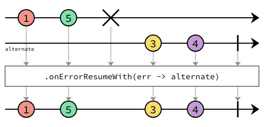

Interface ErrorHandlingOperators<T>
- Type Parameters:
T- The type of the elements that the stream emits.
- All Known Subinterfaces:
ProcessorBuilder<T,,R> PublisherBuilder<T>
The documentation for each operator uses marble diagrams to visualize how the operator functions. Each element flowing in and out of the stream is represented as a coloured marble that has a value, with the operator applying some transformation or some side effect, termination and error signals potentially being passed, and for operators that subscribe to the stream, an output value being redeemed at the end.
Below is an example diagram labelling all the parts of the stream.

- See Also:
-
Method Summary
Modifier and TypeMethodDescriptiononErrorResume(Function<Throwable, ? extends T> errorHandler) Returns a stream containing all the elements from this stream.onErrorResumeWith(Function<Throwable, ? extends PublisherBuilder<? extends T>> errorHandler) Returns a stream containing all the elements from this stream.onErrorResumeWithRsPublisher(Function<Throwable, ? extends org.reactivestreams.Publisher<? extends T>> errorHandler) Returns a stream containing all the elements from this stream.
-
Method Details
-
onErrorResume
Returns a stream containing all the elements from this stream. Additionally, in the case of failure, it invokes the given function and emits the result as final event of the stream.
By default, when a stream encounters an error that prevents it from emitting the expected item to its subscriber, the stream invokes its subscriber's
onErrormethod, and then terminates without invoking any more of its subscriber's methods. This operator changes this behavior. If the current stream encounters an error, instead of invoking its subscriber'sonErrormethod, it will instead emit the return value of the passed function. This operator prevents errors from propagating or to supply fallback data should errors be encountered.- Parameters:
errorHandler- the function returning the value that needs to be emitting instead of the error. The function must not returnnull.- Returns:
- The new stream builder.
-
onErrorResumeWith
ErrorHandlingOperators<T> onErrorResumeWith(Function<Throwable, ? extends PublisherBuilder<? extends T>> errorHandler) Returns a stream containing all the elements from this stream. Additionally, in the case of failure, it invokes the given function and emits the elements from the returnedPublisherBuilderinstead.
By default, when a stream encounters an error that prevents it from emitting the expected item to its subscriber, the stream invokes its subscriber's
onErrormethod, and then terminates without invoking any more of its subscriber's methods. This operator changes this behavior. If the current stream encounters an error, instead of invoking its subscriber'sonErrormethod, it will instead relinquish control to thePublisherBuilderreturned from the given function, which invokes the subscriber'sonNextmethod if it is able to do so. The subscriber's originalSubscriptionis used to control the flow of elements both before and after any error occurring. In such a case, because no publisher necessarily invokesonErroron the stream's subscriber, it may never know that an error happened.- Parameters:
errorHandler- the function returning the stream that needs to be emitting instead of the error. The function must not returnnull.- Returns:
- The new stream builder.
-
onErrorResumeWithRsPublisher
ErrorHandlingOperators<T> onErrorResumeWithRsPublisher(Function<Throwable, ? extends org.reactivestreams.Publisher<? extends T>> errorHandler) Returns a stream containing all the elements from this stream. Additionally, in the case of failure, it invokes the given function and emits the elements from the returnedPublisherinstead.
By default, when a stream encounters an error that prevents it from emitting the expected item to its subscriber, the stream invokes its subscriber's
onErrormethod, and then terminates without invoking any more of its subscriber's methods. This operator changes this behavior. If the current stream encounters an error, instead of invoking its subscriber'sonErrormethod, the subscriber will be fed from thePublisherreturned from the given function, and the subscriber'sonNextmethod is called as the returned Publisher publishes. The subscriber's originalSubscriptionis used to control the flow of both the original and the onError Publishers' elements. In such a case, because no publisher necessarily invokesonError, the subscriber may never know that an error happened.- Parameters:
errorHandler- the function returning the stream that need to be emitting instead of the error. The function must not returnnull.- Returns:
- The new stream builder.
-